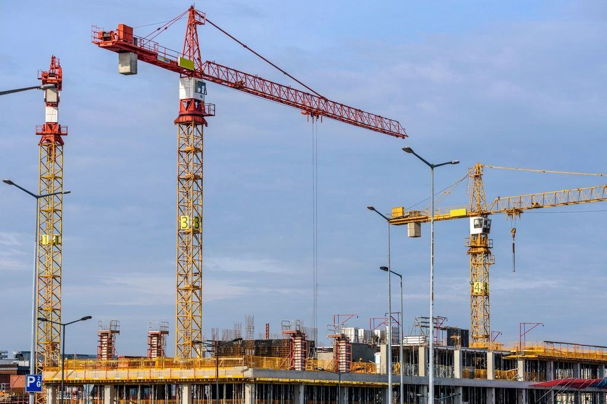

Tjänster
I dag är vi 85 anställda med kontor och lager på Malmvägen. Vi planerar varje projekt efter klimatet: stomme och tak före oktober, invändigt arbete under mörkertiden och markarbeten först när tjälen har släppt i juni.
Vad ska byggas, flyttas eller grundläggas?

Bostäder i nya centrum
Vi har byggt fyra kvarter med flerbostadshus i den nya stadskärnan öster om Luossavaara. Husen har trästomme, treglasfönster och vindfång vid varje entré.
Varje stomme reses under ett tältskydd som tas ned först när taket är tätt.

Flytt av hus
Trähus från 1900-talets början lyfts med domkrafter, spänns fast på specialtrailer och körs i gångfart till ny grund. Vi förbereder grunden, kopplar in vatten och el och lagar det som rört sig under resan.
Sedan 2016 har vi flyttat 41 hus, det tyngsta på 212 ton.

Grund i tjälmark
I Malmfälten går tjälen ned till två och en halv meter. Vi gräver ur, dränerar och gjuter grunder med markisolering som håller huset stilla i femtio år.
Egen maskinpark med tre grävare och en hjullastare som klarar minus 35 grader.

Service och industri
Våra servicesnickare arbetar i verkstäder, personalbyggnader och förråd hos industrin i området. Ramavtalen omfattar allt från dörrbyten till nya omklädningsrum.
Utryckning inom fyra timmar vid skador på klimatskalet vintertid.
Tidplanen följer årstiderna
- 1

Planera efter säsongen
Vi börjar med årstiden: markarbeten juni–september, stomme före första snön och invändigt under mörkertiden.
- 2

Grund innan tjälen
Grunden gjuts med markisolering och värmeslingor under härdningen. Temperaturen loggas varje timme.
- 3

Stomme under tält
Ett väderskydd över hela huset gör att snickarna kan arbeta torrt även i november.
- 4

Överlämning och vinterkoll
Efter inflyttning kommer vi tillbaka efter första vintern och kontrollerar tak, takfötter och fukt.
Certifierade för arktiskt byggande
- ISO 9001 och 14001Kvalitets- och miljöledning certifierad sedan 2018 och reviderad varje höst.
- ID06Elektronisk personalliggare och ID06-kort för alla som arbetar på våra byggen.
- ByggföretagenMedlemmar och anslutna till kollektivavtal och Byggföretagens säkerhetsarbete.
- Säker VattenVåra rörläggare installerar enligt branschreglerna – viktigt där ledningar kan frysa.